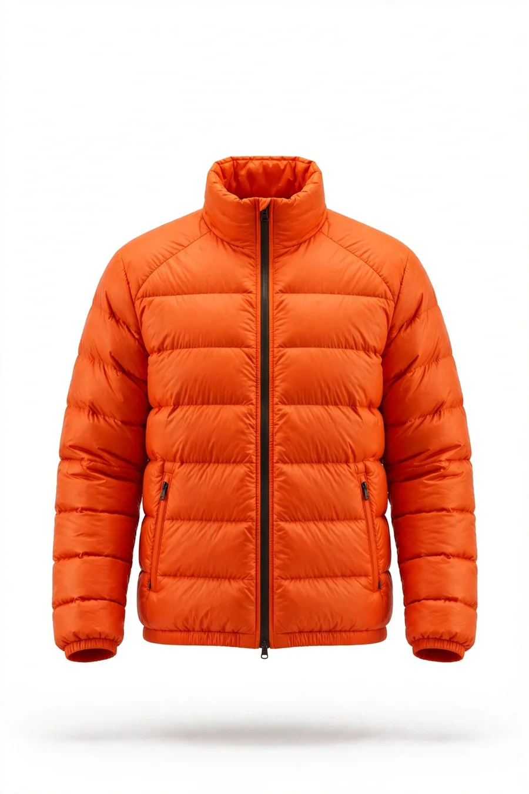
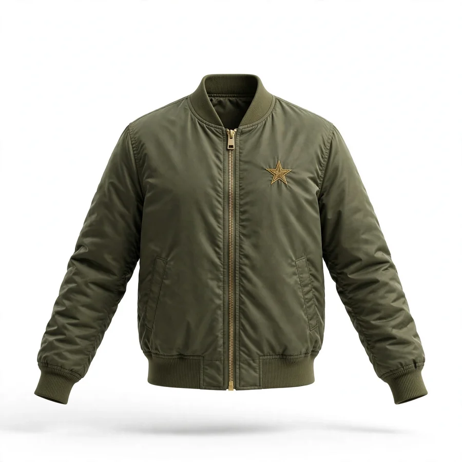
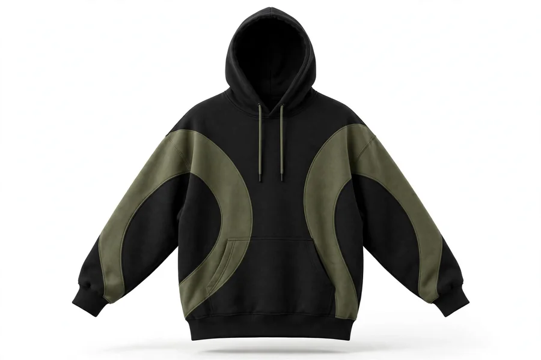
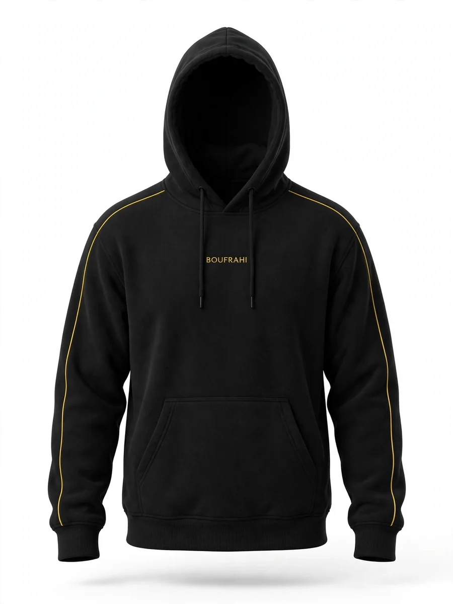
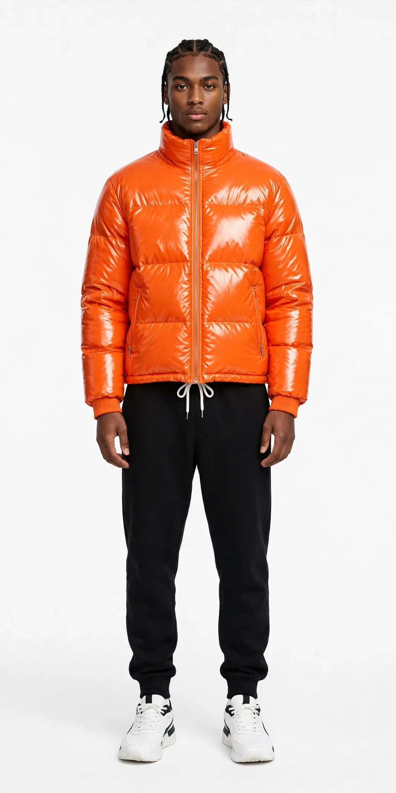
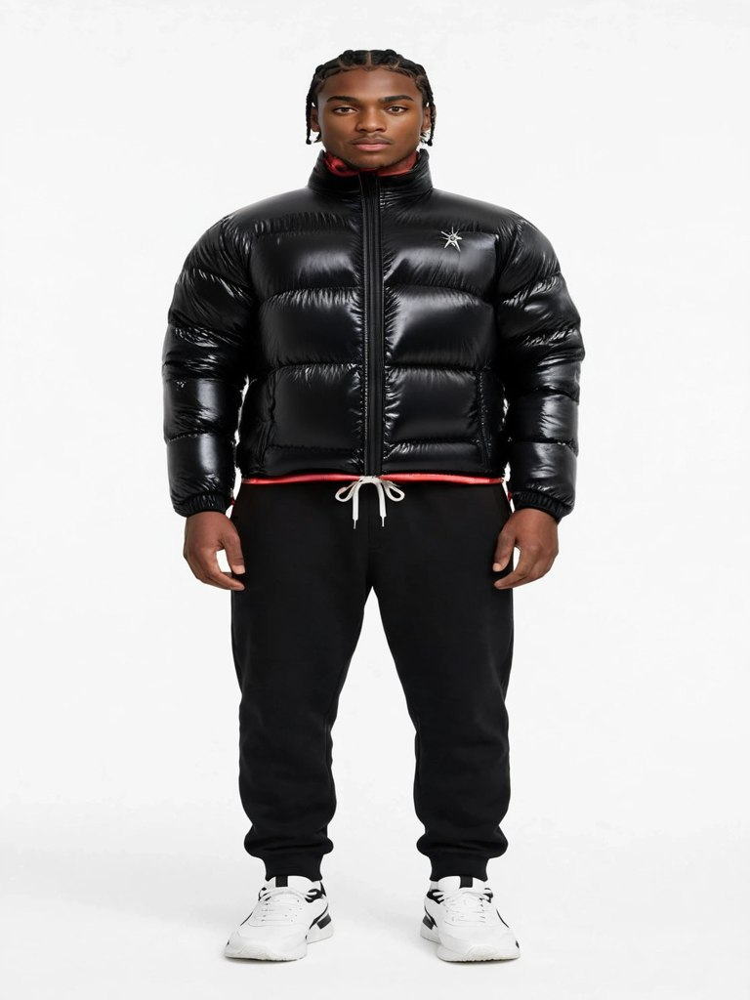

جرّبها بنفسك — ديمو حي
هاد القطع الأربعة من متجر BOUFRAHI التجريبي. لاحظ زر «Try-On» فوق كل صورة: هادا هو الويدجت ديالنا خدام هنا، بنفس الطريقة اللي غادي يخدم بيها في أي متجر. اضغط على أي قطعة وجرّب.




نتيجة حقيقية من المحرك المجاني
ماشي تصويرة إعلانية: هادي نتيجة فعلية خرجها محرك الصورة المجاني ديالنا. نفس الموديل، نفس السروال والصباط — غير الجاكيت تبدلات من البرتقالية للسوداء اللي عطيناه.


كيفاش كتركب في متجرك
كنلصقو سطر واحد في موقعك (Shopify، WooCommerce، ولا موقع مخصص). بلا ما نبدلو الثيم، بلا ما نوقفو المتجر.
الويدجت كيفحص صفحات المنتجات بوحدو وكيزيد زر «Try-On» فوق كل قطعة — بلا ما تدخل نتا في حتى حاجة.
الزبون كيضغط، وكتفتح ليه غرفة القياس فوق المتجر: كيختار وضع الصورة المجاني ولا اللايف بالكاميرا.
<script src="https://bofrahi12.github.io/nocta-clone/tryon/widget.js" async></script>
هادا هو السطر الحقيقي اللي خدام في هاد الصفحة نفسها الآن.
ثلاثة أوضاع — اختار اللي يناسب متجرك
وضع الصورة
الزبون كيرفع تصويرتو وكيتوصل بصورة ديالو لابس القطعة. محرك FASHN VTON v1.5 (مفتوح المصدر، رخصة Apache-2.0) خدام على GPU عمومية — التكلفة 0 درهم، والنتيجة غالباً في أقل من دقيقة. مثالي للبداية ولإثبات الفكرة لزبنائك.
وضع اللايف — VERTEX AI Live
محرك اللايف ديالنا: إطارات مولّدة بالذكاء الاصطناعي كتلبّس الزبون قدام الكاميرا، وبين إطار وإطار اللبسة كتتبع حركته. خدام اليوم على GPU عمومية مجانية، وللمتاجر على نقطة GPU خاصة بينا — بلا ما تخلص بالثانية لشركة أخرى.
وضع اللايف — Decart Lucy
تجربة حية بالكاميرا: الزبون كيتحرك والحوايج كيتبعوه في الوقت الحقيقي، بموديل Lucy VTON ديال Decart. الثمن $0.02 للثانية على حساب Decart ديال المتجر نفسو — كتدفع غير على الثواني اللي تجربات فعلاً، وبتوكنات جلسة قصيرة آمنة.
التطبيق والاستضافة
الويدجت وغرفة القياس منتج ديال VERTEX، مستضاف ومشغل بلا كلفة شهرية على البنية ديالنا. كتخلص التركيب والخدمة عند VERTEX — والاستعمال كيبقى على حساب المحرك اللي اخترتي.
أسئلة كتتعاود
واش خاصني نبدل موقعي ولا الثيم ديالي؟
لا. التركيب هو سطر واحد كيتزاد، والويدجت كيتأقلم مع صور المنتجات اللي عندك أصلاً. إلا تحيد السطر، كلشي كيرجع كما كان.
شنو كيوقع لصور الزبناء؟
في وضع الصورة، التصويرة كتتصيفط غير لمحرك التجربة باش تولد النتيجة، والصفحة ديالنا ما كتخزن حتى صورة. في وضع اللايف، الفيديو كيتدفق مشفر لـ Decart وكيتحول في الوقت الحقيقي.
واش كيخدم في التيليفون؟
أييه — مصمم للتيليفون أولاً: الغرفة كتفتح في لوحة فوق المتجر، والكاميرا الأمامية هي الافتراضية في وضع اللايف.
بشحال غادي تكلفني؟
التركيب والخدمة كيتفق عليهم مع VERTEX حسب متجرك (صيفط لينا في واتساب). وضع الصورة ووضع اللايف ديالنا (AI Live) مجانيان في الاستعمال على الـGPU العمومية. إضافة Decart الاختيارية كتحسب بالثانية عند Decart ($0.02) على حسابك نتا — بلا حتى درهم كيضيع إلا ما تجربات حتى جلسة.
بغيتي غرفة قياس في متجرك؟
صيفط لينا رابط متجرك في واتساب، وغادي نركبو ليك الديمو على منتجاتك الحقيقية باش تشوفها خدامة قبل ما تقرر.
كلمنا في واتساب